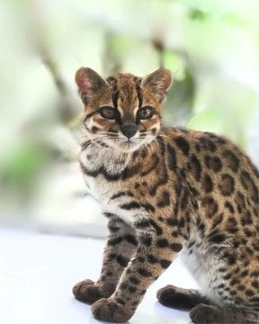
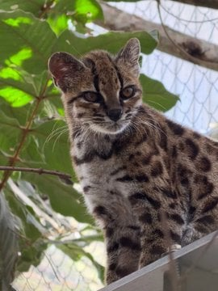

볼리비아 야생동물 구역에서 '이상한 고양이'가 있다고 보고하면서
(원래 길에서 국수랑 쌀 계란같은거 주워먹다 왔다고 함)
이후 유전자 연구로 새로운 종임을 확정하고 레오파르두스 틸카요(Leopardus tilcayo) 라는 학명이 붙음
이상한 고양이 ㅋㅋㅋㅋ


볼리비아 야생동물 구역에서 '이상한 고양이'가 있다고 보고하면서
(원래 길에서 국수랑 쌀 계란같은거 주워먹다 왔다고 함)
이후 유전자 연구로 새로운 종임을 확정하고 레오파르두스 틸카요(Leopardus tilcayo) 라는 학명이 붙음
이상한 고양이 ㅋㅋㅋㅋ
와 사우디에서 몇십억으로 살거같네
튈까요?
삵이잖아
칡맞네 치타+삵
치타랑 삵이랑 그게 가능해????
울프독은그럼!
표정이 띠껍네
앙칼진 깍쟁이처럼 생겼네 긔여워
사바나캣이랑 또 다르게생겼네
칡 아니냐? ㅋ 머리에 두줄이 꼭 빼닮았네
표정 뚱한거 귀엽네
저게 고양이로 분류되나?
표범이나 그런류같은데
고양잇과?
뭐야 생긴건 치타인데 무늬는 제규어네
수요좀 있겠는데
위키백과 보니까 남미 쪽 오셀롯하고 비슷한 계통임. 생긴 것만 보면 남미 삵이라고 보면 되겠구만.
https://en.wikipedia.org/wiki/Tilcayo_tiger_cat
남미 삵이니까 맑
낡
존나 요망하게 생겼는데?
치타 삵이니 칡이 옳다
근데 저런 새로운종의 최초 탄생은 언제 어떻게 생겼을까??. 쟤가 어느날 갑자기 생기지는 않았을꺼 아니야??
우리 모두는 스엑스를 통해 생겨났어요
근연종끼리 스엑스
칡이다
요망하게 생겼네...
칡 같긴 한데 무늬는 또 애매하고...
저런애들도 동족을 만나야 섹스를 할텐데 대체 어떻게 어떻게 계속 만나서 이어져 내려왔을까
??????? 뱅갈 고양이 아니야? 세상이 나를 억까하나? 걍 뱅갈 고양이구만 뭔 새로운종... 지네 나라에서 처음 봤다고 새로운종으로 등록해버린거 아님?ㅋㅋ
세상이 니 머리 속 지식만으로만 돌아가는게 아니란다ㅋㅋ
구글에 뱅갈고양이 검색만해봐도 완전다르게생겼구만 뭔..
ㅈㄴ귀엽당
호랭무늬 낙타네
와 포유동물에서 신종이라니
귀엽다잉